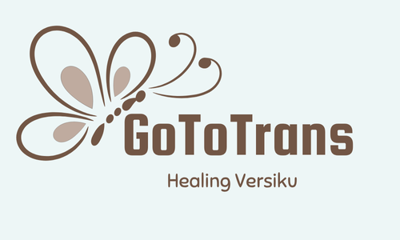
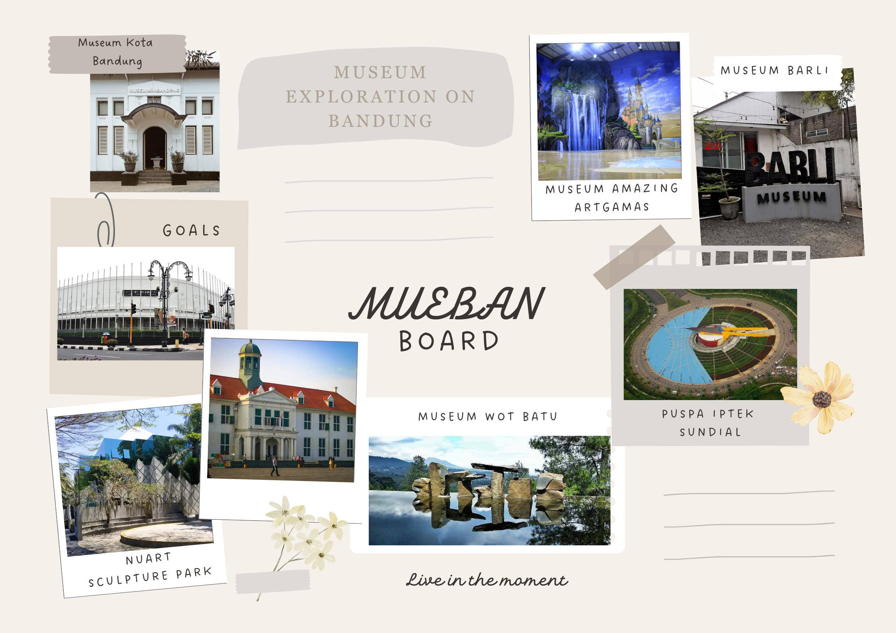
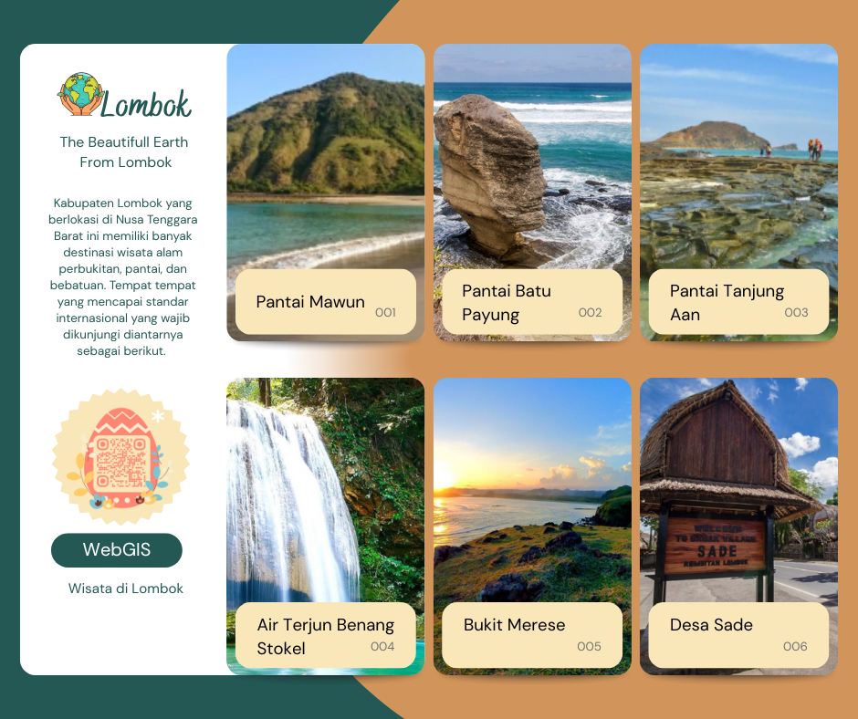

Risma Enggar Sri Kawurihan
WebGIS Developer | GIS Mapping | Geospatial Data Specialist | Spatial Data Analyst


About Me
I am a seventh-semester student in the Geographical Information Systems Study Program at Universitas Gadjah Mada, with a strong interest in spatial data management, analysis, and visualization.I have experience using GIS software such as ArcGIS, AutoCAD, QGIS, pgAdmin, and Ocean Data View, as well as programming skills in R, Python, JavaScript, HTML/CSS, and PHP for WebGIS development and application building. Additionally, I am skilled in deep learning-based geospatial data processing using Google Earth Engine and ArcGIS Pro, including object detection, feature extraction, and 3D modeling.
My Skills
-
WebGIS Developer
Designing and developing interactive map-based applications integrating spatial data with modern web technologies.
-
GIS Mapping
Creating accurate and detailed maps for various purposes, including urban planning, environmental studies, and infrastructure development.
-
Geospatial Data Specialist
Managing, processing, and analyzing large-scale geospatial datasets to support data-driven decision-making.
-
Spatial Data Analyst
Interpreting spatial patterns, trends, and relationships to provide insights and solutions for geospatial challenges.
Mapping

Tsunami Hazard Map
This map illustrates the tsunami hazard level in the coastal area of Parangtritis, classified from very low to very high. This information is useful for disaster mitigation planning and determining evacuation zones.
River Order Map
This map shows the division and classification of river orders in an area, used for hydrographic network analysis, water resource management, and flood disaster mitigation.
Building Density Map
This map visualizes the level of building density in an area, useful for spatial planning, development control, and infrastructure management.
Temperature Map
This map shows the distribution of air temperature in a region during a specific period, useful for climate analysis, agricultural planning, and weather monitoring.

Flow Map of Air Passenger Volume
This map illustrates the flow of air passenger movement between airports using a flow map symbol, helping analyze connectivity and air transportation trends.

Population Map
This map shows the distribution of the population in a specific area, used for public service planning, development, and social policy making.

Land Use Map
This map presents land use such as settlements, agriculture, forests, and water bodies, important for environmental management and land use change control.

Spatial Pattern Map
This map shows spatial allocation based on regional spatial plans, including protected areas and cultivation areas.
Mangrove Vegetation and Index Map
This map shows the distribution of mangrove vegetation along with density or health index, used for coastal ecosystem monitoring and conservation.
Tentative Land Use Map
This map presents a preliminary design of land use that is still tentative, useful as a discussion and evaluation material in spatial planning.
Geomorphology Map
This map displays the shape and structure of the Earth's surface, including landforms such as mountains, valleys, and plains, important for geological studies and disaster mitigation.

Regional Rainfall Map
This map visualizes rainfall distribution in an area, used for agricultural planning, water resource management, and flood mitigation.
Projects
WebGIS GoToTrans
A WebGIS designed to make it easier for the public to access information about TransJogja. This WebGIS has an interactive map feature that contains the distribution of bus stops and TransJogja routes according to bus codes. In addition, it also provides information on stops near popular tourist destinations in Yogyakarta.
WebGIS Mueban
A WebGIS designed to display the distribution of museums in Bandung. This WebGIS features an interactive map and information tables about each museum. Each museum location is integrated with nearby Trans Bandung bus stops, making it easier for foreign tourists or visitors to reach the museums.
The Beautiful Earth Lombok
This WebGIS StoryMap takes you on a journey to explore the beauty of Lombok Island through a combination of visual narratives and interactive maps. It also features portraits of local cultural life rich in tradition, making Lombok not only visually stunning but also historically and culturally valuable.
Swaraning Sidorejo
This WebGIS StoryMap contains information about the history, environment, culture, tourism, and local works of Sidorejo Village. It aims to digitize village information so that data and potential can be well documented, easily accessible, and utilized for promotion, education, and spatial data-based decision-making.

DailyAPP Mobile Application
DailyAPP is a mobile application designed to manage activities, travel, and location search for users. It includes a Planning feature for scheduling activities, Memories for storing memorable events, and Recommended for suggesting restaurants, cafes, and photo spots in Yogyakarta. There is also a Map feature showing leisure locations along with related information.

Internship
Internship Experience
Agraria dan Tata Ruang/Badan Pertanahan Nasional (ATR/BPN) Boyolali
(Jan 2025 – Feb 2025)Conducted building detection for 3D mapping of Boyolali Regency using ArcGIS Pro with Deep Learning, detailed-scale building digitization in AutoCAD, and field coordinate verification using Geodetic GNSS.
Dinas Pertanahan dan Tata Ruang Kota Yogyakarta
(Feb 2025 – Jun 2025)Evaluated WebGIS platforms (Pepadhang Resik Jogja, Loka Tata, Geoportal Yogyakarta City), developed Loka Tata WebGIS, digitized 791 land parcels in BHUMI ATR/BPN, conducted building digitization, and performed building number surveys.
Field Work Practice
Prepared geospatial data, introduced landforms in Sleman, Yogyakarta City, and Bantul, and developed base & thematic maps for Turi District, Sleman.
Collected data and mapped Nguntuk-untuk Hamlet, Ngargosari Village, Samigaluh District, Kulon Progo.
Resume
Education
- SMA Negeri 1 Banyudono – Natural Sciences (Jun 2019 - Jul 2022)
- Universitas Gadjah Mada – Bachelor of Applied Science in Geographic Information Systems, GPA 3.36/4.00 (Aug 2022 - May 2026)
Organizational Experience
-
Keluarga Mahasiswa Departemen Teknologi Kebumian (KMDTK) – Entrepreneurship Division Staff (Mar 2024 - Jul 2024)
Managed and purchased merchandise for sale in the canteen, collaborating with 14 division members.
-
PPSMB Pionir Permadani – Co-Facilitator & Activities Division (Aug 2023 - Nov 2024)
Guided new students during campus orientation and acted as a communication liaison with the committee.
-
Ramadhan Berkah Mardliyyah (RBM) & SAJADHA – Public Relations & Liaison Officer (Mar 2023 - Aug 2024)
Built relationships with sponsors, media, and the public; managed communication with guests or speakers.
-
Kebumian Study Club (KSC) – Member (Dec 2023 - Jul 2024)
Participated in training and club activities.